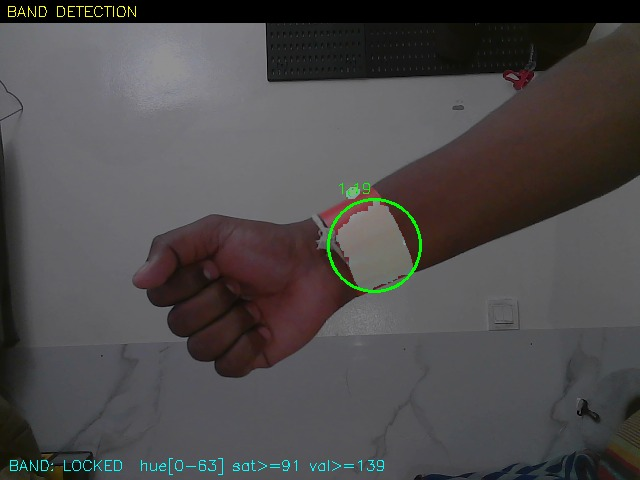
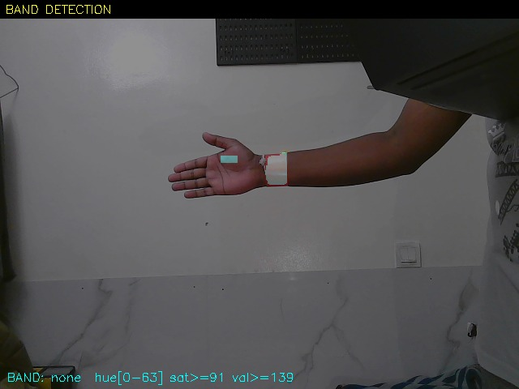
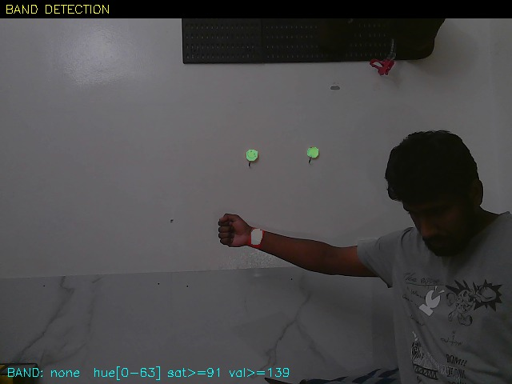

The report is submitted and the write-up below reflects where the project stands. The presentation used for the oral defense is added below.
Report Submission
The Thesis Report was brought up to date and submitted against the deadline: seven table fixes (hardware spec, motor count, battery pack, the wiring appendix's encoder pins and its stale RTC row) plus a full rewrite of the Raw Test Results appendix — replacing four placeholder numbers with a real structured summary citing actual measured results across hardware, motion, fall detection, medication reminders, cost and battery runtime.
One explicit ground rule was set for this pass and held to throughout: genuine Fail and Partial results (person detection, band detection, and others) stay exactly as measured. Nothing gets softened into a false Pass — the same honest, hedged framing already used elsewhere in the report (the keypad's dead row, the band's range limit) covers these too. The remaining open items — GSM live trials, person-following, the full integrated-scenario tests — are stated as planned ahead of the oral presentation, which is graded separately about a month later, not claimed as already done.
GSM, Finally Isolated
The A7670C module going silent once wired into the full robot has been an open question since Week 15. This week it got pulled off the main chassis entirely and put on its own bench rig — a separate Arduino Uno, a bench power supply, and a direct pyserial connection to the module rather than the Arduino IDE's own serial monitor, to rule out anything monitor-side. PWRKEY on pin 9, the module on SoftwareSerial pins 10/11 — but only once the baud rate was corrected. 9600 baud gave total silence; the module's fixed rate turned out to be 115200, confirming a baud mismatch, not a dead module.
Once talking to it correctly, the results were clean: the module identifies itself as a SIMCOM A7670C-LANS, the SIM reports +CPIN: READY, and it registers on the home network (+CREG: 0,1, confirmed twice). A test SMS was sent and received — the first attempt returned a network timeout during the transmit burst (matching this project's own documented capacitor-stabilisation finding from earlier in the build), and a retry went through cleanly.
The Real Fault: a Voltage Margin, Not a Dead Part
With the module and SIM confirmed working, the next step was a proper voltage sweep on the bench supply, sending batches of test SMS at each level and tracking success directly over the pyserial connection:
- 6.4V — a real reliability problem: an AT command itself arrived corrupted in transit, one send errored, and the module fell badly behind under repeated load.
- 6.5V — clean. All 6 sent, all 6 confirmed received on the test phone. Roughly 0.1V above 6.4V is enough to fix it.
- 6.2–6.3V (AT-command only, no SMS — conserving SIM balance after it ran low) — consistent response corruption, with one brief, recoverable deregistration event. Never went fully silent even down here, so the true floor is somewhere below 6.2V and wasn't pinned down this session.
One result had to be thrown out honestly rather than misread: readings at 6.6V and 6.7V also failed to deliver, but the network reported "Your balance is low" twice during that stretch, after roughly 30 test messages sent that session. That's SIM balance depletion, not a voltage finding — those two data points are excluded from the conclusion rather than treated as evidence that higher voltage is somehow worse.
Standing conclusion: the module and SIM are fully functional. Reliability is clean at 6.5V and degrades progressively below that, without a hard cutoff found down to 6.2V. Any further GSM failure on the actual robot is now known to be a Mega-side supply or wiring issue — capacitor placement, the 6.6V rail's current capacity under the transmit spike, or a marginal PWRKEY/TX/RX connection — not the module or the SIM. The next step is back on the real robot: measure the GSM rail's actual voltage at the module's own power pins while it's transmitting, not at idle, to see whether it sags into this now-known degraded range under real load.
What Did Not Go Well (So Far)
The true lower voltage floor wasn't found — testing stopped at 6.2V without reaching full failure, so the degraded range could extend lower than measured. Two data points (6.6V, 6.7V) were lost to SIM balance running out mid-session rather than a clean test design that reserved balance for the full sweep. The bench isolation confirms the module works in principle, but live GSM alerting on the fully assembled robot itself is still not confirmed — that retest, on the real Mega and Jetson together, is the immediate next step.
RFID, Also Isolated: a Host Power-Quality Fault
A separate, long-open question got the same isolation treatment this week: RFID tag acknowledgment, which read a corrupted chip version (0x24 instead of the known-good 0x92) and detected zero tags once wired onto the assembled robot, despite working cleanly in earlier bench testing. Rather than re-checking the same wiring a third time, every plausible variable was isolated one at a time, powering the exact same Mega and RFID module from different sources and hosts:
| # | Configuration | VersionReg | Tag Scan | Rules Out / Confirms |
|---|---|---|---|---|
| 1 | Laptop USB + barrel jack (battery) both connected | 0x92 (good) | ✓ Success | Chip and wiring are genuinely fine |
| 2 | Jetson USB + battery via barrel jack | 0x24 (corrupt) | ✗ Failed | First sign of a problem |
| 3 | Jetson USB alone, battery disconnected | 0x24 (corrupt) | ✗ Failed | Rules out: battery / shared robot power |
| 4 | Jetson USB + DC-DC converter at 9V via barrel jack | 0x24 (corrupt) | ✗ Failed | Rules out: barrel jack voltage too low (5.5V) |
| 5 | Jetson USB + 9V + decoupling capacitors (10µF/0.1µF) at RFID VCC/GND | 0x24 (corrupt) | ✗ Failed | Rules out: DC-DC converter switching noise |
| 6 | Laptop USB alone, barrel jack fully unplugged | 0x92 (good) | ✓ Success (UID 85CDF1E2) | Confirms: clean on laptop with nothing else connected |
| 7 | Jetson USB alone, barrel jack fully unplugged (identical to #6, different host) | 0x24 (corrupt) | ✗ Failed | Isolates the cause: only the host device differs |
Finding: RFID's own hardware, wiring, and SPI connections are all confirmed good — rows #1 and #6 prove that outright. Rows #6 and #7 are otherwise identical and differ only in which device supplies USB power to the Mega, which is what isolates the actual cause: the Jetson's USB port supplies weaker, noisier 5V than a laptop's. That's just barely enough to degrade the Mega's onboard 3.3V regulation and corrupt RFID's SPI communication specifically, while simpler peripherals on the same rail — LCD, buzzer, keypad, motors — tolerate it without issue.
This is a real, reproducible power-quality fault, not a wiring mistake or a dead module, and not something fixable in firmware. Given that, relying on RFID to silence a safety-critical fall alert isn't a safe design on this hardware combination, so RFID-based alert acknowledgment has been removed from the firmware entirely. The keypad's * key is now the sole acknowledgment path. RFID tag scans are still logged for reference, just no longer tied to any action.
Camera Tilt Servo: a Failed Component, Confirmed
The camera-tilt servo was tested in full isolation on both candidate pins (46 and 10 — the firmware's own header comment had drifted out of sync with its pin constant, so both were checked to be certain). Zero movement and zero sound on either pin, with the signal, power, and ground lines all independently confirmed correct. That rules out a wiring or software fault — this is a dead servo, a failed physical component, not a bug. Tilt controls have been removed from the web dashboard accordingly; the camera remains fixed-angle until the unit is replaced.
Alert Escalation and Autonomous Following
Two further pieces landed this week. First, a proper escalation system for both alert types instead of a single one-shot message: a fall alert (panic key or an AI-confirmed fall) now sends 6 SMS messages 10 seconds apart, then one every 5 minutes indefinitely until someone acknowledges it — it never gives up on its own. A medicine/reminder alert (the same mechanism also covers meal or check-in reminders — any reminder is just this path with a different label) sends 6 messages 5 minutes apart, then keeps the buzzer and LCD prompt active even after it stops texting. Both can be acknowledged with the keypad's * key, including while a message is still mid-send, rather than needing to wait out the full send cycle first.
Second, autonomous person-following is now live: the robot turns to keep the enrolled patient's face centered in frame, confirmed working directly on the hardware, and automatically pauses the moment the web dashboard is actively in use so the two control paths never fight each other. The forward/backward approach-and-back-off side of this (closing distance to a comfortable range rather than only turning) is still being refined — the first version relied solely on how large the face appears in frame, which is an imprecise distance proxy on its own; the next iteration combines that with the robot's own ultrasonic ring for a steadier, less oscillation-prone result.
Measured Results: Person and Band Detection
Face tracking was run back-to-back under two lighting conditions — mid-light/average room, and low-light/minimum room with unbalanced lighting — and held a clean lock in both, which is what the autonomous-following result above is actually built on.
The HSV colour-band fallback got a proper distance sweep for the first time, rather than the general "works close-up, drops out further away" note carried since Week 14:
| Distance | Trials | Result |
|---|---|---|
| 50cm | 3 | 2 of 3 detected — intermittent, not reliable |
| 100cm | 3 | 0 of 3 detected |
| 150cm | 2 | 0 of 2 detected |



That puts a real number on the band's effective range: usable, but inconsistently, only at close range (around 50cm), and not a dependable fallback beyond arm's length. It's documented as exactly that — a known limitation of the fallback mode, not a reason to distrust the primary face-recognition path, which is what's actually carrying autonomous following today.
Where the Project Stands Going Into the Demonstration
Confirmed working on the real hardware: forward/backward driving, autonomous face-tracking, the GSM alert pathway (voltage-margin understood and corrected for), RTC-based real-time timestamping, and the escalating alert/reminder system described above. A small number of items are being carried into the live demonstration as explained findings rather than polished demo moments — in each case because the root cause is already identified and documented, not because it was left unexamined:
- In-place turning stalls on one drive side under load — refined this week from a general motor-torque limit to a more specific root cause, floor friction combined with the robot's own weight imbalance, found while preparing the presentation below. It's a known hardware constraint either way, presented as such rather than as a working feature.
- RFID tag acknowledgment is unreliable specifically when the Mega is powered through the Jetson's own USB port (see the isolation table above) — the keypad's
*is the demonstrated acknowledgment path for the presentation, with RFID's root cause stated plainly rather than shown as if resolved. - The camera tilt servo, per above, is a confirmed failed part — the presentation states this directly rather than working around it silently.
Each of these is a diagnosed, evidenced finding rather than an unexplained gap, and will be presented as exactly that during the demonstration.
Presentation
The slide deck used for the oral defense, embedded directly below. Click "Fullscreen" before presenting — the viewer's own controls (arrow keys, page thumbnails, zoom) work the same as any PDF reader once it's open.
The End of v1.0 Development
This post closes out v1.0 development. The thesis is submitted, the test log in Appendix E is final, and the presentation above is what was actually delivered at the oral defense. Everything from here — camera tilt, the turning stall, GSM re-verification on the assembled robot, the full 115-test suite — is real, documented, unfinished work, not something glossed over to call the project "done." v1.0 is a research prototype that proved the core ideas (GSM-independent alerting, on-device fall detection, face-and-band person tracking, a sub-$500 build).
The final v1.0 testing video — the robot as it stood for the test log above and the oral defense.
What Comes After v1.0
Two different directions were discussed for what a v2 would actually need, and they're not the same project:
Continuing as research — closing the gaps already named throughout this blog: the in-place turning fix (replacement motors or the asymmetric-drive approach raised in the Week 13 supervisor meeting), a working tilt servo, GSM confirmed live on the assembled robot rather than only on the isolated bench rig, and — the actual validation this whole project has been working toward — ethical clearance and real trials with elderly participants outside the lab.
Moving toward something closer to commercial — a different kind of work, less about adding features and more about making the existing ones survive daily handling. The clearest starting point, named explicitly rather than left vague: the camera tower needs a full mechanical redesign for stability while the robot is actually moving, not just standing still. The current build is a single pole mounted at one point on the chassis, carrying the camera, LCD, keypad, and RFID reader at the top — a tall, top-heavy cantilever with no bracing. It was never stress-tested under real driving loads, since most of this project's testing happened with the robot stationary or moving slowly in a confined space. A tower that wobbles or flexes during a turn is a direct risk to the camera's aim (and by extension face-tracking accuracy), and plausibly contributed to the kind of mechanical stress that a single point-of-failure part like the tilt servo doesn't tolerate well. Solving this properly — a wider base, bracing back down to the chassis, or a shorter/lower-mounted head — is the first piece of architecture that would need rethinking before anything else gets layered on top, commercial or otherwise.
Both directions share the same starting point: this project's own honestly-documented limitations, not a wishlist. Nothing here is proposed as quick or assumed to work — each is exactly the kind of claim this project has tried not to make without testing it first.